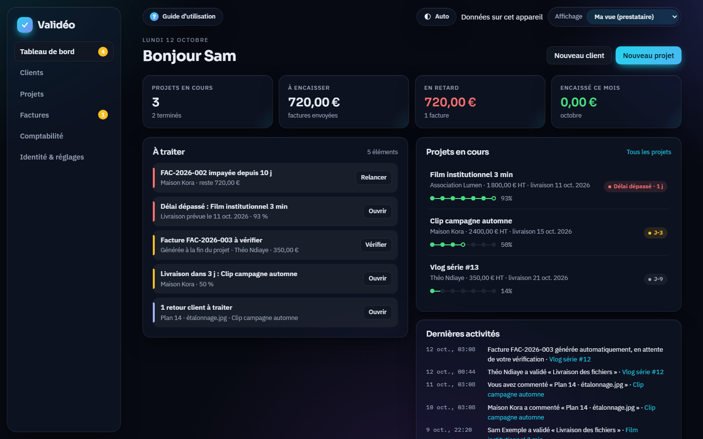
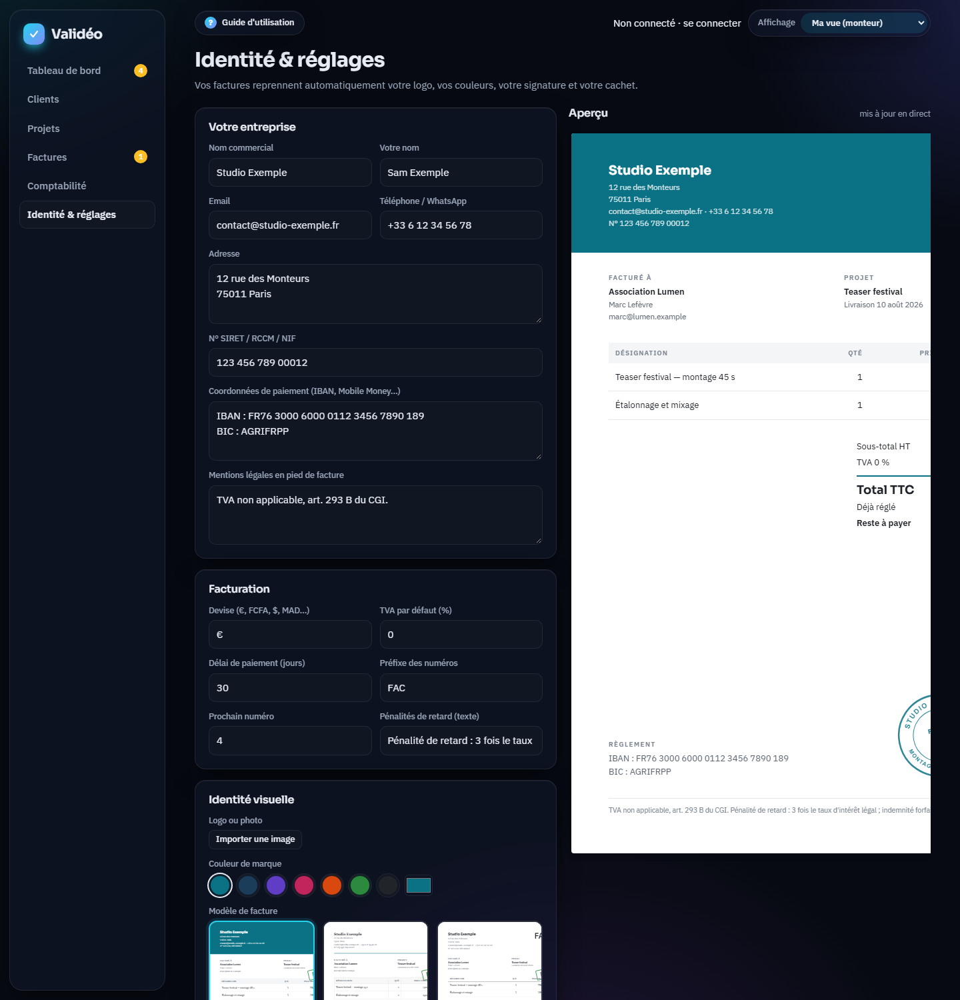
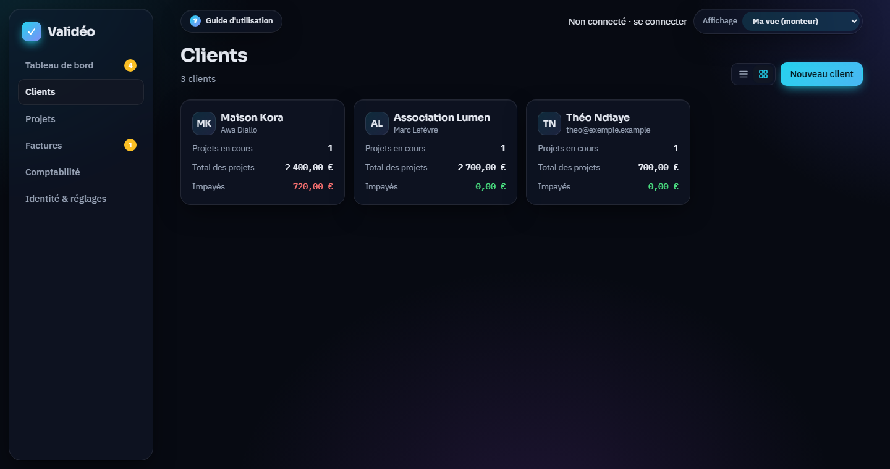
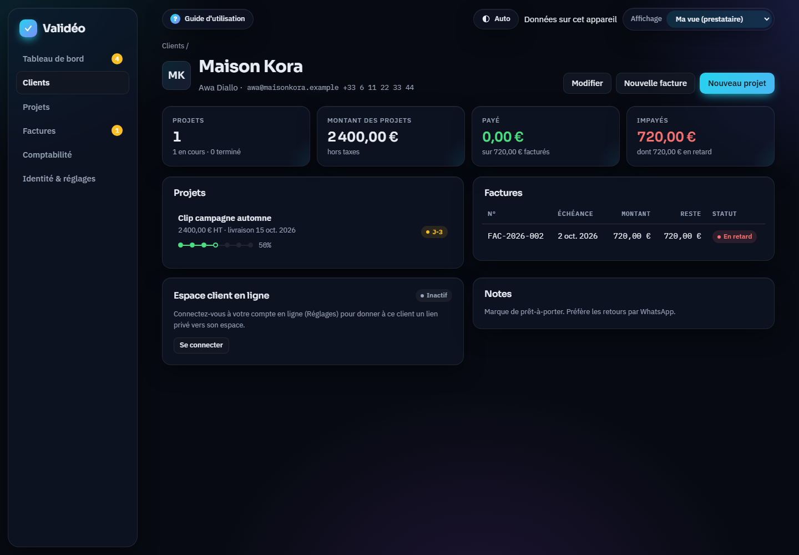
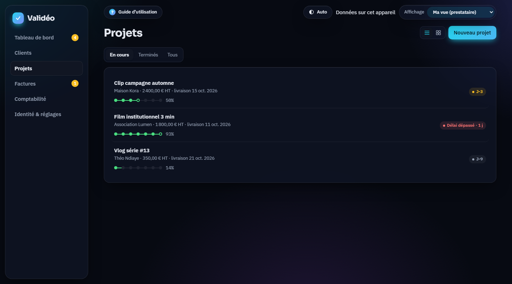
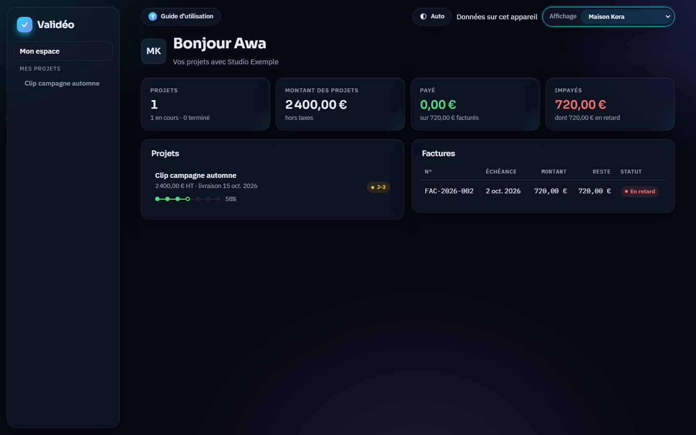
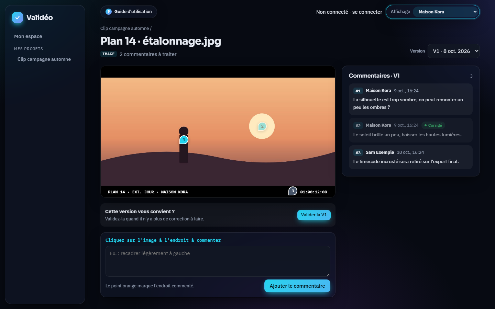
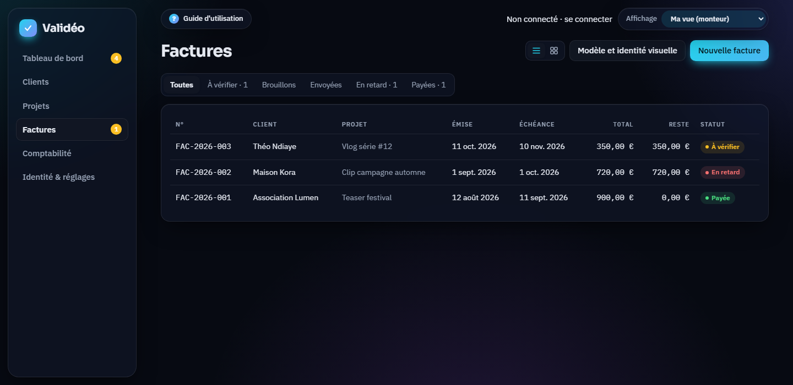

Découvrir l'interface
Validéo tient sur un seul écran. À gauche, le menu : Tableau de bord, Clients, Projets, Factures, Comptabilité, Identité & réglages. Les pastilles orange indiquent ce qui demande ton attention.
En haut, trois repères :
- ? Guide d'utilisation ouvre ce guide.
- L'état de synchronisation : Synchronisé, Hors ligne ou Non connecté. Clique dessus pour aller à ton compte.
- Le sélecteur Affichage : Ma vue (monteur) ou la vue d'un client, pour voir exactement ce qu'il voit.

Créer ton compte et te connecter
Validéo s'ouvre sur une page de connexion. L'inscription se fait en trois étapes, indiquées en haut du formulaire : Compte, Confirmation, Profil.
Avec ton email
Clique sur Créer un compte gratuit. Indique ton prénom et ton nom, le nom de ton activité (facultatif), ton email et un mot de passe. La jauge sous le mot de passe indique s'il est assez solide.
Ouvre l'email de confirmation et clique sur le lien : tu arrives directement dans Validéo. Rien reçu ? Regarde dans les indésirables ou clique sur Renvoyer l'email.
Complète ton profil : ton nom, ton activité, ton métier, ta devise et ton numéro WhatsApp. Ces infos préparent tes factures et tes messages.
Avec Google
Clique sur Continuer avec Google et choisis ton compte Google : pas de mot de passe à créer ni d'email à confirmer. Tu passes directement à l'étape Profil.
Mot de passe oublié
Sur la page de connexion, clique sur Mot de passe oublié ?, indique ton email, puis suis le lien reçu pour choisir un nouveau mot de passe.
Une fois connecté, la carte Bienvenue du tableau de bord te guide : ton identité visuelle, ton premier client, ton premier projet. Pour t'entraîner avant, ouvre la démo : des clients, projets et factures fictifs, dans un espace séparé jamais enregistré en ligne. Les captures de ce guide viennent de cette démo.
Un nouveau compte démarre sur l'offre Découverte : 2 projets en cours et 3 clients. Les offres Solo, Pro et Studio lèvent ces limites (voir les tarifs). L'offre en cours s'affiche dans Identité & réglages → Compte en ligne.
Se déconnecter (dans Identité & réglages) synchronise tes dernières modifications puis efface tes données de l'appareil. Elles restent en sécurité dans ton compte.
Ton identité et tes réglages
Tout ce que tu remplis ici apparaît sur tes factures. L'aperçu à droite se met à jour pendant que tu tapes.
Ton entreprise
Nom commercial, ton nom, email, téléphone/WhatsApp, adresse, numéro SIRET, RCCM ou NIF, coordonnées de paiement (IBAN, Mobile Money…), mentions légales.
Facturation
Devise (€, FCFA, $…), TVA par défaut, délai de paiement, préfixe et prochain numéro de facture, texte des pénalités de retard.
Identité visuelle
Logo ou photo, couleur de marque (pastilles ou couleur libre), modèle de facture parmi six.
Signature et cachet
Signe à la souris ou au doigt, ou importe une image. Le cachet rond est généré avec tes textes et ta couleur.

Ajouter un client
Menu Clients → Nouveau client.
Renseigne le nom du contact, l'entreprise (facultative), l'email et le numéro WhatsApp avec l'indicatif (ex. +221 77 123 45 67), puis l'adresse de facturation.
Ajoute des notes privées si besoin : le client ne les voit jamais.
La liste des clients s'affiche en grille ou en liste : utilise les deux petites icônes à côté du bouton. Le même choix existe pour les projets et les factures.

En ouvrant un client, tu obtiens son tableau de bord : ses projets, le montant total, ce qui est payé, les impayés, ses factures et le lien de son espace en ligne.

Créer un projet
Nouveau projet depuis le tableau de bord, la page Projets ou la fiche du client.
Donne un titre, choisis le client, indique le montant HT et la date de livraison.
Vérifie les étapes, une par ligne. Par défaut : Brief & devis validés, Dérushage, Montage V1, Retours client, Corrections / V2, Étalonnage & mixage, Livraison des fichiers. Adapte-les à ton projet.

Besoin d'un acompte ? Dans la page du projet, carte Facturation, clique sur Acompte : une facture de 30 % est préparée. Il sera déduit automatiquement de la facture finale.
Valider les étapes
Une étape n'est terminée que lorsqu'elle est validée des deux côtés. La barre d'avancement en tient compte : une validation sur deux compte pour moitié.
De ton côté
Coche Moi quand l'étape est faite. Si le client t'a dit « c'est bon » par message, tu peux aussi cocher Client pour lui.
Du côté du client
Il ne voit pas de cases à cocher : il voit l'état de l'étape et un bouton Valider l'étape, mis en avant quand l'étape est prête.

Après chaque validation, un message propose Prévenir : il prépare l'alerte d'avancement pour les participants.
Dès que la dernière étape est validée des deux côtés, le projet passe en Terminé et sa facture finale est générée, à vérifier (voir chapitre 11).
Participants et alertes email / WhatsApp
Dans un projet, carte Participants, ajoute les personnes qui suivent le projet avec le client : directrice artistique, chargé de com, producteur… avec leur email et/ou leur WhatsApp.
Clique sur Prévenir les participants. Le message d'avancement est déjà rédigé : pourcentage, étapes terminées, prochaine étape, date de livraison, et le lien de l'espace client si tu es connecté.
Modifie le texte si tu veux.
Clique sur Email ou WhatsApp à côté de chaque personne : ta messagerie ou WhatsApp s'ouvre avec le message prêt. Il ne reste qu'à envoyer.
Validéo prépare les messages mais ne les envoie pas à ta place : c'est toi qui appuies sur Envoyer dans ta messagerie ou dans WhatsApp.
Révisions des médias : commenter, corriger, renvoyer
Importer un média
Dans un projet, carte Médias en révision → Importer un fichier. Vidéos, sons et images sont acceptés. Le média devient la V1.
Commenter au bon endroit
- Vidéo ou son : lance la lecture, puis clique dans la zone de commentaire. La lecture se met en pause et le commentaire est attaché à cet instant, au format HH:MM:SS:II (25 images/seconde). Des repères apparaissent sur la barre sous le lecteur.
- Image : clique à l'endroit précis sur l'image. Un point orange apparaît, puis écris ta remarque. Chaque point est numéroté.

Corriger et envoyer une nouvelle version
Corrige dans ton logiciel de montage, puis clique sur Marquer corrigé pour chaque commentaire traité.
Clique sur Envoyer une nouvelle version et choisis le fichier : il devient la V2. Le sélecteur Version permet de revoir les versions précédentes et leurs commentaires.
Clique sur Prévenir dans la notification : le message indique le nombre de corrections intégrées.
Valider une version
Quand plus rien n'est à corriger, le client clique sur Valider la V2. Tu peux aussi Marquer V2 validée s'il t'a confirmé par message.
Suppression automatique des médias
Pour garder de la place, les fichiers d'un média, de la V1 à la version finale, sont supprimés un certain nombre de jours après sa validation, sur ton appareil comme en ligne.
- Choisis le délai dans Identité & réglages → Stockage des médias : 1, 3, 7, 14, 30 ou 60 jours, ou Ne jamais supprimer.
- La date de suppression s'affiche sur le média validé, et une alerte apparaît 2 jours avant.
- Les commentaires et l'historique restent consultables.
Garde toujours tes fichiers sources et tes exports finaux sur ton disque : Validéo sert à la relecture, pas à l'archivage.
L'espace client
Chaque client dispose d'un lien privé vers son espace, sans création de compte. Il y voit ses projets, l'avancement, les médias à relire et ses factures envoyées.
Connecte-toi à ton compte en ligne : les liens sont créés à la synchronisation.
Ouvre la fiche du client, carte Espace client en ligne.
Copier le lien ou Envoyer au client par email ou WhatsApp.


Ses validations et ses commentaires t'arrivent dès que ton application est ouverte, avec une notification et une alerte sur ton tableau de bord.
Pour voir exactement ce que voit ton client, choisis son nom dans le sélecteur Affichage en haut à droite. Reviens avec Ma vue (monteur).

Factures automatiques : vérifier, ajuster, envoyer
À la fin d'un projet, la facture finale est créée avec le statut À vérifier. Son montant reprend celui du projet, acomptes déjà facturés déduits. Rien ne part sans ta validation.
Ouvre-la depuis l'alerte du tableau de bord ou le menu Factures.
Applique une remise en % ou en montant, puis Appliquer. Ou clique sur Modifier les lignes pour changer les désignations, les quantités, la TVA ou la note.
Clique sur Valider et envoyer. Le message au client est prêt avec le montant, l'échéance et tes coordonnées de paiement.
Pour joindre le PDF : Imprimer / enregistrer en PDF, choisis « Enregistrer au format PDF », puis ajoute le fichier à ton message.

Les statuts d'une facture
| Statut | Signification |
|---|---|
| Brouillon | Créée à la main, pas encore envoyée. |
| À vérifier | Générée à la fin d'un projet, en attente de ta validation. |
| Envoyée | Validée, en attente de paiement avant l'échéance. |
| Paiement partiel | Une partie est réglée, le reste est dû. |
| En retard | L'échéance est dépassée et il reste un montant dû. |
| Payée | Entièrement réglée. Un tampon « PAYÉE » apparaît sur le document. |

Modèles de facture et identité visuelle
Six modèles sont disponibles. Ils reprennent tous ton logo, ta couleur, ta signature et ton cachet.
| Modèle | Style |
|---|---|
| Moderne | En-tête plein à ta couleur, texte blanc. |
| Classique | Typographie à empattements, tableau encadré, double filet. |
| Épuré | Grand titre fin, lignes discrètes, beaucoup d'air. |
| Bande latérale | Colonne de couleur sur le côté, total dans un bloc plein. |
| Prestige | En-tête sombre souligné de ta couleur, titres élégants. |
| Encadré | Blocs teintés, lignes alternées, total en carte. |
Le modèle par défaut se choisit dans Identité & réglages. Tu peux aussi en changer pour une seule facture, carte Apparence de la facture.
Paiements, preuves et relances
Enregistrer un paiement
Sur la facture, Enregistrer un paiement.
Indique la date, le montant (le reste dû est proposé), le mode de paiement (virement, Mobile Money, espèces, carte, chèque, PayPal) et la référence.
Joins la preuve de paiement : capture, reçu ou PDF. Elle reste consultable dans la facture et la comptabilité.
Un paiement partiel est accepté : la facture passe en Paiement partiel jusqu'au solde.
Relancer un client
Bouton Relancer sur la facture, dans la comptabilité ou dans l'alerte du tableau de bord. Le message est poli et précis : numéro, échéance, nombre de jours de retard, montant restant et coordonnées de paiement. La date de chaque relance est enregistrée.
Comptabilité
- Chiffres de l'année : encaissé (dont ce mois), créances, montant en retard, dépenses et résultat.
- Graphique sur 12 mois : encaissements et dépenses mois par mois.
- Créances et impayés : chaque facture ouverte avec ses jours de retard et des boutons Paiement et Relancer.
- Entrées : tous les paiements reçus, avec le mode, la référence et la preuve.
- Dépenses : logiciels, matériel, musique, déplacements… avec Ajouter une dépense.

Le tableau de bord et ses alertes
La carte À traiter rassemble tout ce qui demande une action, du plus urgent au moins urgent :
| Alerte | Quand | Action |
|---|---|---|
| Impayée | Échéance dépassée | Relancer |
| Délai dépassé | Date de livraison passée, projet non terminé | Ouvrir le projet |
| À vérifier | Facture générée en fin de projet | Vérifier |
| Livraison proche | 3 jours ou moins avant la livraison | Ouvrir |
| Échéance proche | 5 jours ou moins avant l'échéance d'une facture | Voir |
| Validation client | Le client a validé une étape que tu n'as pas encore cochée | Confirmer |
| Retours client | Commentaires non traités sur un média | Ouvrir |
| Suppression proche | Les fichiers d'un média validé seront supprimés sous 2 jours | Voir |
Hors ligne, installation et sauvegarde
Hors ligne
Après une première visite, Validéo s'ouvre et fonctionne sans connexion. Tes modifications sont envoyées en ligne au retour du réseau.
Installer l'application
Sur ordinateur (Chrome, Edge), utilise l'icône d'installation dans la barre d'adresse. Sur téléphone : menu du navigateur → « Ajouter à l'écran d'accueil ».
Sauvegarde
Identité & réglages → Exporter une sauvegarde : un fichier qui contient tout, fichiers compris. Restaurer une sauvegarde pour le recharger.
Plusieurs appareils
Connecte-toi avec le même compte : ordinateur et téléphone partagent les mêmes projets.
Questions et dépannage
| Situation | Solution |
|---|---|
| Un fichier reste « sur cet appareil » | Il dépasse 50 Mo. Exporte une version de relecture plus légère (720p, H.264) et envoie-la comme nouvelle version. |
| La pastille indique « Erreur de synchro » | Vérifie ta connexion, puis clique dessus et choisis Synchroniser maintenant. |
| Le client ne voit pas son lien | Il faut être connecté à ton compte en ligne. Le lien apparaît dans la fiche client après la synchronisation. |
| Le bouton WhatsApp ne s'ouvre pas | Vérifie que le numéro contient l'indicatif du pays (+33, +221, +225…). Sinon, utilise Copier le message. |
| « Fichier introuvable sur cet appareil » | Le média a été importé sur un autre appareil hors connexion, ou supprimé. Restaure une sauvegarde ou envoie une nouvelle version. |
| Je veux recommencer de zéro | Identité & réglages → Tout effacer. Exporte une sauvegarde avant. |
Prêt à suivre ton premier projet ?
Les données d'exemple sont là pour s'entraîner : essaie chaque chapitre directement dans l'outil.
Ouvrir Validéo